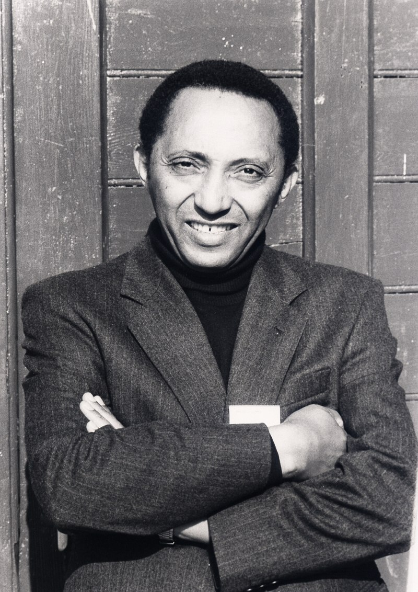

Dr. Aklilu Lemma(18 September 1935 – 5 April 1997)

Aklilu Lemma was a young Ethiopian doctor who discovered a natural treatment against bilharzia, also known as schistosomiasis, a debilitating and eventually fatal illness. He relentlessly studied and systematically improved his research, developing an affordable preventative, locally
controllable means of eradicating a disease that, after malaria, has been the second greatest scourge in the Third World.
Bilharzia, or schistosomiasis, is a debilitating and eventually fatal illness, which afflicts more than 200 million people in 74 countries of Africa, Asia and Latin America. Available therapies for bilharzia, and molluscicides to kill the snail-carriers of the disease, have been far too expensive for the communities that needed them.
In 1964, as a young Ethiopian doctor, Aklilu Lemma discovered that suds from the fruit of a common African plant, the endod or soapberry (Phytolacca dodecandra), which African women have used as soap for centuries, act as a potent molluscicide. To follow up this discovery, in 1966 Lemma established the Institute of Pathobiology at Addis Ababa University, and for the next 10 years, he directed a team to carry out systematic research on endod. In 1974, he was joined in this work by Legesse Wolde-Yohannes.
The discovery seemed to offer no less than cheap, locally controllable means of eradicating a disease that is the second greatest scourge (after malaria) in tropical countries. And Lemma's early research confirmed this potential. Yet progress in making this endod product available to the people who needed it has been extremely slow, for reasons that expose some of the biases and failings of the international medical community.
However, Lemma's and Wolde-Yohannes' persistence and the support of key scientists and donors in the West have opened the door to the necessary laboratory and field trials. An endod research and application network has also been established, linking five African countries, and the plant was grown and used for experimental control of schistosomiasis.
Before his death in 1997, Lemma and colleagues established the Endod Foundation to serve as an umbrella for all endod-related work. Following collaboration with Lemma, the University of Toledo, USA, was granted a US patent on an endod-based molluscicide intended to control the zebra mussels which have recently invaded American lakes and caused extensive damage to water supplies. This has opened a major new hope for marketing and exporting endod as a cash crop.
Aklilu Lemma graduated with a doctorate in pathobiology from Johns Hopkins University, Baltimore, USA. In Ethiopia, he held many senior academic and advisory positions. From 1976, he worked in the UN system and became Deputy Director of UNICEF's International Child Development Centre in Florence, Italy, before taking up a Visiting Professorship in the Department of International Health, Johns Hopkins University.